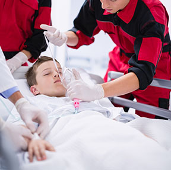

24/7 Pediatric Emergency Surgical Intervention
Accidents, traumas, or suddenly developing surgical disorders in childhood can create situations where even seconds are important. In Adana, Assoc. Prof. İlknur Banlı Cesur, with her deep experience in the field of pediatric emergency surgery, makes the fastest and most vital touches to our children at critical moments.
In emergency surgical cases, correct diagnosis and calm intervention are essential. Many conditions ranging from abdominal traumas to burns, appendicitis to testicular torsion enter the category of surgical emergency. Our goal is to use all the possibilities of modern medicine for our children who apply to the emergency department, to prevent permanent damage and to start the fastest recovery process.
Main Conditions Requiring Emergency Intervention
Surgical emergencies that require intervention without losing time in children are:

- Acute Appendicitis (Risk of appendix rupture)
- Testicular Torsion (Testis twist - First 6 hours are critical)
- Incarcerated Inguinal Hernia
- Intussusception (Bowel telescoping)
- Blunt and Penetrating Abdominal/Thoracic Traumas
- GI Bleeding (Gastrointestinal bleeding)
Post-Traumatic Follow-up
In situations such as falls and traffic accidents, detecting organ injuries is vital.
- Follow-up in liver and spleen injuries
- Internal bleeding risk assessment
- Advanced radiological imaging (CT, USG)
- Priority of non-surgical treatment options
Racing Against Time: Testicular Torsion
Testicular torsion is the twisting of the testicle around itself, cutting off the blood flow.
- Golden hours (surgery within the first 6 hours)
- Saving the testicle
- Protecting the other testicle by fixing it as well
- Emergency application in sudden scrotal pain
Safe Hands in Critical Moments
Emergency surgical situations are the most stressful moments for parents. As Assoc. Prof. İlknur Banlı Cesur, we help you manage this stress by providing professional and fast surgical solutions for our children in Adana in emergency situations. When your children need emergency intervention, we are always ready.
Yes, especially in appendicitis and some bowel obstruction cases, the laparoscopic (closed) method can be successfully applied even under emergency conditions and speeds up recovery.
Pains that increase continuously, prevent the child from walking, are accompanied by vomiting, or the child reacts excessively when the abdomen is touched are in favor of a surgical emergency and require an immediate examination.